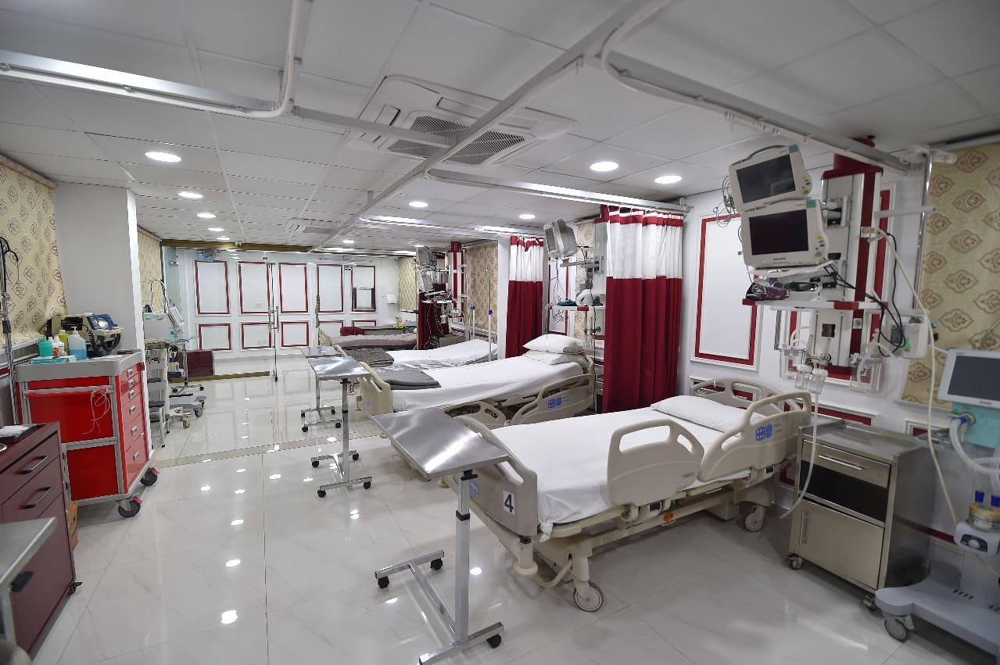
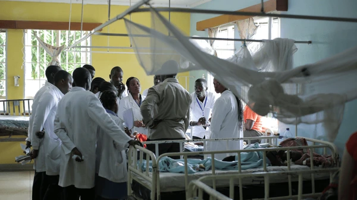
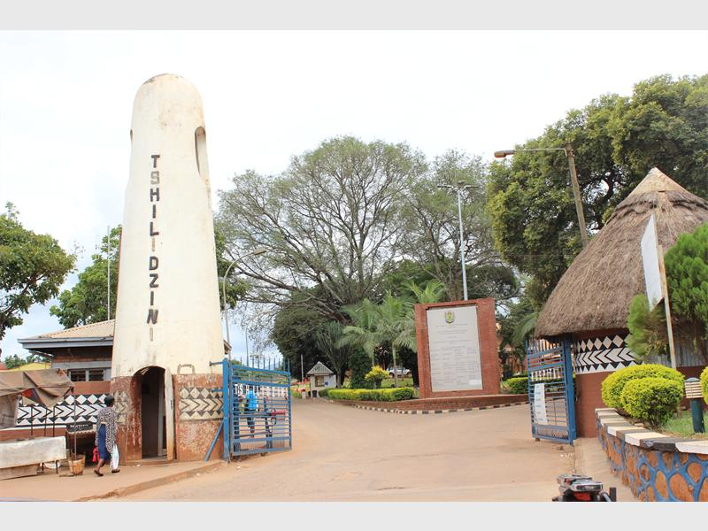

Serving the community of Thohoyandou with dedication and care since 1972.
To provide comprehensive, accessible, and quality healthcare services that promote the well-being of our community through compassionate care and clinical excellence.
We are committed to delivering patient-centered care that respects the dignity and diversity of all individuals while addressing their physical, emotional, and spiritual needs.
Our mission extends beyond treatment to include health education, disease prevention, and community outreach programs that empower individuals to take control of their health.
To be the leading healthcare institution in the Vhembe District, recognized for excellence in patient care, medical innovation, and community health education.
We envision a future where every individual in our community has access to quality healthcare services regardless of their background or economic status.
Through continuous improvement and collaboration with healthcare partners, we strive to set new standards in clinical services and become a model for rural healthcare delivery in South Africa.

Compassion: We treat every patient with empathy, kindness, and respect, recognizing the unique needs of each individual.
Excellence: We are committed to the highest standards of clinical care and continuous improvement in all our services.
Integrity: We conduct ourselves with honesty, transparency, and ethical behavior in all our interactions.
Collaboration: We work together as a team and with our community partners to provide comprehensive care.
Innovation: We embrace new technologies and approaches to enhance patient care and hospital operations.

Established in 1972, Tshilidzini Hospital has been serving the communities of Thohoyandou and surrounding areas for over five decades.
Originally founded as a mission hospital, we have grown from a small facility to a comprehensive healthcare center with specialized departments and modern medical equipment.
Throughout our history, we have remained committed to our founding principles of providing compassionate care to all, regardless of their ability to pay.
Today, we continue to build on this legacy while adapting to meet the evolving healthcare needs of our community.
